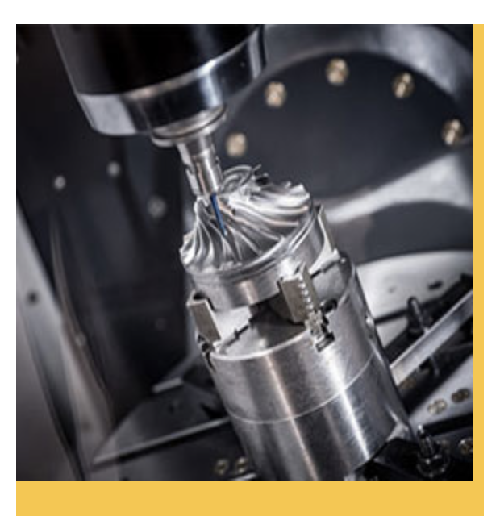

电气设计施工图中常用线路敷设方式
2019-10-25
电气设计施工图中常用线路敷设方式
电气设计施工图中常用线路敷设方式： SR： 沿钢线槽敷设 BE： 沿屋架或跨屋架敷设 CLE：沿柱或跨柱敷设 WE： 沿墙面敷设 CE： 沿天棚面或顶棚面敷设 ACE：在能进入人的吊顶内敷设 BC： 暗敷设在梁内 CLC：暗敷设在柱内 WC： 暗敷设在墙内 CC： 暗敷设在顶棚内 ACC：暗敷设在不能进入的顶棚内 FC： 暗敷设在地面内 SCE：吊顶内敷设,要穿金属管 一，导线穿管表示 SC-焊接钢管 MT-电线管 PC-PVC塑料硬管 FPC-阻燃塑料硬管 CT-桥架 MR-金属线槽 M-钢索 CP-金属软管 PR-塑料线槽 RC-镀锌钢管

二，导线敷设方式的表示 DB-直埋 TC-电缆沟 BC-暗敷在梁内 CLC-暗敷在柱内 WC-暗敷在墙内 CE-沿天棚顶敷设 CC-暗敷在天棚顶内 SCE-吊顶内敷设 F-地板及地坪下 SR-沿钢索 BE-沿屋架，梁 WE-沿墙明敷
三，灯具安装方式的表示 CS-链吊 DS-管吊 W-墙壁安装 C-吸顶 R-嵌入 S-支架 CL-柱上 沿钢线槽：SR 沿屋架或跨屋架：BE 沿柱或跨柱：CLE 穿焊接钢管敷设：SC 穿电线管敷设：MT 穿硬塑料管敷设：PC 穿阻燃半硬聚氯乙烯管敷设：FPC 电缆桥架敷设：CT 金属线槽敷设：MR 塑料线槽敷设：PR 用钢索敷设：M 穿聚氯乙烯塑料波纹电线管敷设：KPC 穿金属软管敷设：CP 直接埋设：DB 电缆沟敷设：TC 导线敷设部位的标注 沿或跨梁（屋架）敷设：AB 暗敷在梁内：BC 沿或跨柱敷设：AC 暗敷设在柱内：CLC 沿墙面敷设：WS 暗敷设在墙内：WC 沿天棚或顶板面敷设：CE 暗敷设在屋面或顶板内：CC 吊顶内敷设：SCE 地板或地面下敷设：FC
上一篇：连接器连接两端的不同属性...
下一篇：专业销售电源连接器产品...